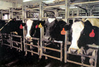
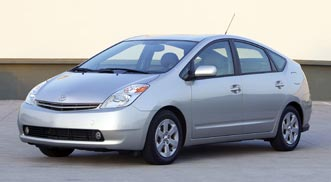

Fifteen years after Great Britain began destroying 3.7 million cattle because of an epidemic of mad cow disease, the first U.S. case of mad cow was confirmed in December in Washington state. The infected cow already had been slaughtered, and its meat dispersed into the human food supply.
Initially, the USDA reported the cow was a "downer"-an animal too sick to walk, which is a possible sign of mad cow infection-but subsequent eyewitness reports have disputed that claim. Determining the animal's status is important because downers are targeted in the USDA's mad cow surveillance plan.
Mad cow (also called BSE or bovine spongiform encephalopathy) is a fatal cattle disease that causes spongelike holes in the brain, making the infected animal stagger-thus the descriptive term "mad" cow. Scientists think animals develop the disease by eating feed containing brains, spinal cords or central nervous system tissues of other infected animals. (Yes, our industrial food system has been feeding cattle parts back to cattle! For more on this topic, see "Cattle Futures," Page 24.)
The human form of this disease is called variant Creutzfeldt Jakob Disease (vCJD), and relatively few people are thought to have been infected by eating nervous-system tissue from diseased cattle. Mad cow and vCJD are caused by prions, infectious protein particles that cannot be destroyed by cooking. According to the USDA, the risk of humans contracting the disease by eating U.S. beef is extremely low, but consumer groups say the agency is not doing enough to protect the public. The Centers for Disease Control and Prevention so far confirm 153 cases of vCJD worldwide, with 143 of those in the United Kingdom.
Since the outbreak of mad cow disease in the 1980s in Europe, consumer groups have urged the USDA to adopt stringent testing and tracking rules for beef. But, the beef industry resisted. A week after the U.S. mad cow case was confirmed, the USDA finally announced it would implement a national identification system to track meat, and ban downer cattle and mechanically separated meat from the human food supply. Beef producers also must follow new, more-stringent guidelines when using Advanced Meat Recovery (AMR) systems. AMR systems strip meat dose to the spinal cord and increase the odds that BSE-infected central-nervous tissue could enter the human food supply.
Three-quarters of processing plants that use AMR systems produce meat containing spinal-cord tissue, a 2002 USDA study estimates. Ground-beef products such as hot dogs and hamburger (including pizza toppings and taco fillings) are most likely to contain stripped meat. Marrow in the bones of muscle cuts could contain spinal cord tissue, too. Milk and milk products are not thought to be at risk of contamination.
Dr. Michael Greger, a physician with the Organic Consumers Association, says the new regulations still aren't enough to protect consumers, and the most glaring omission is the lack of adequate BSE testing of live cattle. During the last 14 years, he says, the USDA tested only about 57,000 cattle (every year, 36 million cattle are slaughtered in this country). "We're barely testing even the highest-risk animals," he says.
Track Mad Cow Developments
USDA: www.usda.gov/BSE
Organic Consumers Association: www.organicconsumers.org/madcow.htm
Center for Science in the Public Interest: www.cspinet.org
Global Resource Action Center for the Environment (GRACE): www.factoryfarm.org
Greger also says the USDA needs to eliminate the use of beef remnants in all livestock and pet feeds. In 1997, the FDA banned the practice in cattle feed, but Greger says the law is too loosely enforced and does not include other animal feeds.
Marion Nestle, author of Safe Food and Food Politics, and professor of nutrition and food studies at New York University, recommends boycotting beef as a political statement. "It's the only way to send a message to these powerful forces," she says. "[The USDA] knew what needed to be done and didn't do it. Consumers need to start demanding food safety in this country."
If you do opt to eat beef, certified organic is your safest option-federal organic standards prohibit the use of animal byproducts in organic feeds.
- Lindsey Hodel
Prius Paves the Way for a Hybrid Future
Get behind the wheel of a 2004 Toyota Prius (shown at right) and "you know you're not in Kansas anymore." So say the editors of Motor Trend magazine, who gave Toyota's redesigned gas/electric hybrid their "2004 Car of the Year" award. The editors did not hesitate to grant the Prius their prestigious award, praising it as a comfortable, fun-to-drive car that just happens to get spectacular fuel economy-up to 60 miles per gallon.
There are no penalties for the Prius' environmental consciousness-that's its magic, Motor Trend editors say. The Prius has swift acceleration (zero to 60 mph in 9.8 seconds), room for five passengers, numerous conveniences standard and impressive engineering that gives the hybrid a smooth performance barely distinguishable from traditional gas-engine vehicles. The Motor Trend editors say the 2004 Prius is the first hybrid that auto enthusiasts can enjoy: "It provides a tantalizing preview of a future where extreme fuel-efficiency, ultra-low emissions and stirring performance will happily coexist in one package."
Consumers, too, are giving the Prius fanfare. Since its late 2003 introduction, sales have outpaced production-at press time there were about 15,000 outstanding orders, creating a waiting list of about four months, although increased production should catch up to demand this spring. Toyota plans to produce 47,000 units in 2004 just to meet demand. And the improved 2004 Prius-with more power, more room and improved fuel economy-won't cost you more than its predecessor: The base price remains at $19,995. Plus, if you bought a hybrid before 2004, you are eligible for a $2,000 tax deduction; buy a hybrid this year and you are eligible for a $1,500 deduction. This benefit ends after 2005, but the Bush administration has proposed continued and higher tax credits for hybrids. For more information, visit www.toyota.com/prius .
As significant as the Prius' success is, it is just the beginning for hybrid vehicles. A deluge of hybrid announcements has come from the auto industry in the first half of 2004, particularly regarding trucks and SUVs. Highlights include:
• The first luxury hybrid, the Lexus RX 400h, arrives later this year. Lexus, a division of Toyota, estimates the hybrid midsize SUV will get an average fuel economy of 27.6 mpg.
•Toyota will release a hybrid version of its Highlander SUV in 2005. Toyota says the seven-passenger Highlander Hybrid will travel 600 miles on one tank of gas, with more horsepower and quicker acceleration than its gas-engine counterpart.
• In late 2004, Honda will release a hybrid version of its best-selling Accord. It will deliver more horsepower than the traditional Accord, while achieving the fuel economy of a smaller compact car.
• Mercedes-Benz announced a prototype of the world's first diesel/electric hybrid, the Vision Grand Sports Tourer. The diesel engine and electric motor combination will deliver up to 318 horsepower.
• Despite delays, Ford may be the first domestic automaker to release a hybrid. Production of the hybrid version of its Escape SUV is slated to begin in July.
•General Motors plans to use hybrid technology to improve the fuel efficiency of its trucks and SUVs by about 30 percent the world's largest automaker says that is a more economically sound and environmentally positive strategy than putting hybrid technology in less-expensive cars that already have high fuel economies. The first hybrid trucks, the GMC Siena and Chevrolet Silverado, may go on sale later this year.
-John Rockhold
sprouts & snippets
Asking Questions First.
San Franciscans are choosing to be safe rather than sorry. The city is the first in the United States to adopt an environmental code based upon the Precautionary Principle that calls for full evaluation of environmental repercussions before a potentially hazardous project can be pursued. According to the Environmental Working Group, San Francisco's new policy is making the chemical industry nervous that this common sense approach may be adopted more widely. For more information, go to www.ewg.org/briefings/acc/ .
Get E from Sunflower Seeds.
A third of all Americans don't get enough Vitamin E in their diet, according to the U.S. Food and Drug Administration. Vitamin E, an antioxidant, is thought to prevent and control chronic disease, including heart disease. You can increase your Vitamin E intake by eating sunflower seeds. At 14 mg per ounce, sunflower seeds pack more Vitamin E than any other food source. A healthy handful can provide the daily recommended amount-a tasty 15 mg.
Nuclear Power Phaseout.
Germany, the largest industrial nation to renounce nuclear energy, shut off a 32-year-old, 660-megawatt nuclear reactor late last year. The move is the first step in an agreement between the German government and the nation's nuclear industry. In a gradual process, all 19 German nuclear facilities, which provide one-third of Germany's electricity, will power down by 2025. Both renewable and fossil-fuel energy sources will compensate for the deficit. Meanwhile, the United States, France and Japan, nations with the most reactors, remain committed to the controversial energy source. Power from 104 reactors accounts for 20 percent of U.S. electricity. France relies on 59 reactors for 77 percent of its energy, and Japan, with 53 operating reactors, plans to build 12 more.
Mother Earth News
|
 Cattle continue to be at risk or contracting mad cow disease from feed because high-protein bovine blood is used in the ""milk replacer"" routinely fed to dairy calves, and sometimes to beef-breed calves, too. |
 |
|